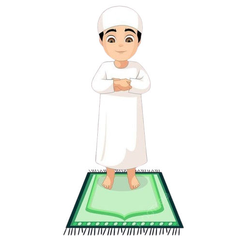
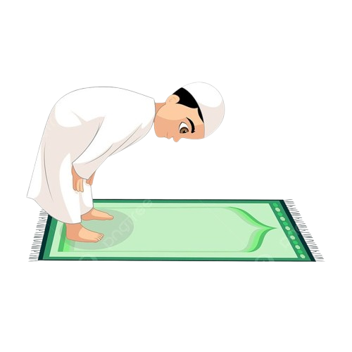
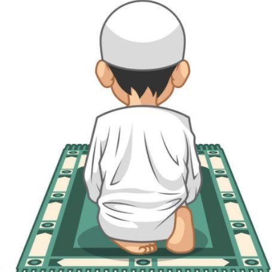
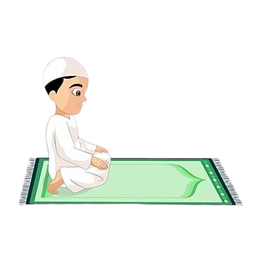
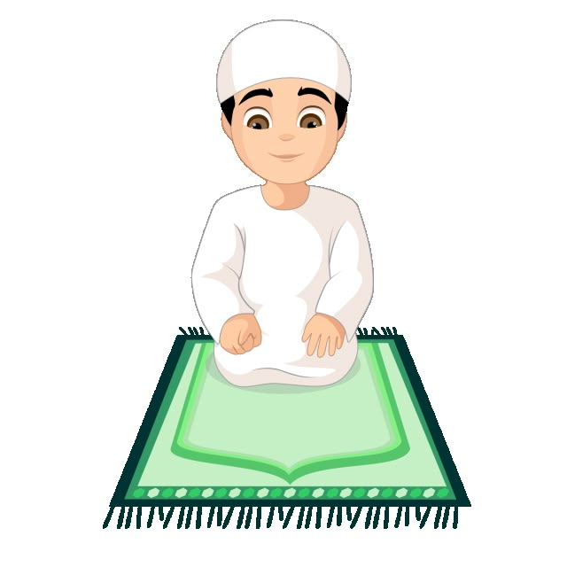
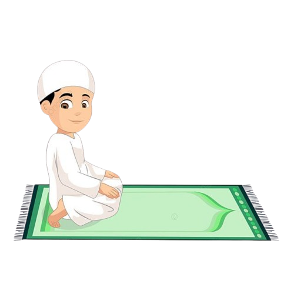

Panduan Tatacara Sholat
Berikut adalah panduan lengkap tatacara sholat sesuai dengan Himpunan Putusan Tarjih Muhammadiyah. Setiap gerakan dilengkapi dengan penjelasan dan audio untuk memudahkan pembelajaran.
1
Berdiri Tegak
Posisi Berdiri
- Berdiri tegak menghadap kiblat
- Kedua kaki sejajar
- Tangan di samping badan
- Pandangan ke tempat sujud
- Badan tegak dan rileks
Catatan: Berdiri merupakan rukun sholat yang wajib dilakukan dengan sempurna.
2
Takbiratul Ihram
Gerakan Takbir
- Mengangkat kedua tangan sejajar bahu
- Telapak tangan menghadap kiblat
- Mengucapkan "Allahu Akbar"
Bacaan Takbiratul Ihram:
اللهُ أَكْبَرُ
Allahu Akbar
"Allah Maha Besar"
Catatan: Takbiratul ihram menandai dimulainya sholat dan masuknya ke dalam keadaan ihram.
3
Bersedekap

Posisi Bersedekap
- Berdiri tegak menghadap kiblat
- Meletakkan kedua tangan di atas pusar dan tangan kanan di atas tangan kiri
- Pandangan ke tempat sujud
- Membaca Iftitah kemudian Al-Fatihah dan surat pendek setelahnya
Bacaan Iftitah:
اللَّهُمَّ بَاعِدْ بَيْنِي وَبَيْنَ خَطَايَايَ كَمَا بَاعَدْتَ بَيْنَ الْمَشْرِقِ وَالْمَغْرِبِ، اللَّهُمَّ نَقِّنِي مِنْ خَطَايَايَ كَمَا يُنَقَّى الثَّوْبُ الْأَبْيَضُ مِنَ الدَّنَسِ، اللَّهُمَّ اغْسِلْ خَطَايَايَ بِالْمَاءِ وَالثَّلْجِ وَالْبَرَدِ
Allaa humma baa‘id bainii wabaina khathaayaa yaa kamaa baa ‘adta bainal masyriqi wal maghrib. Allaa humma naqqinii minal khathaayaa kamaa yunaqqats-tsaubul abyadu minaddanas. Allaa hummaghshil khathaayaa yaa bil maa’i watstsalsji wal barad.
"Ya Allah, jauhkanlah aku dari kesalahan-kesalahanku sebagaimana Engkau telah menjauhkan antara timur dan barat. Ya Allah, bersihkanlah aku dari kesalahan-kesalahanku sebagaimana kain putih dibersihkan dari kotoran. Ya Allah, cucilah kesalahan-kesalahanku dengan air, salju, dan embun."
Bacaan Al-Fatihah:
بِسْمِ اللَّهِ الرَّحْمَٰنِ الرَّحِيمِ
الْحَمْدُ لِلَّهِ رَبِّ الْعَالَمِينَ
الرَّحْمَٰنِ الرَّحِيمِ
مَالِكِ يَوْمِ الدِّينِ
إِيَّاكَ نَعْبُدُ وَإِيَّاكَ نَسْتَعِينُ
اهْدِنَا الصِّرَاطَ الْمُسْتَقِيمَ
صِرَاطَ الَّذِينَ أَنْعَمْتَ عَلَيْهِمْ غَيْرِ الْمَغْضُوبِ عَلَيْهِمْ وَلَا الضَّالِّينَ
الْحَمْدُ لِلَّهِ رَبِّ الْعَالَمِينَ
الرَّحْمَٰنِ الرَّحِيمِ
مَالِكِ يَوْمِ الدِّينِ
إِيَّاكَ نَعْبُدُ وَإِيَّاكَ نَسْتَعِينُ
اهْدِنَا الصِّرَاطَ الْمُسْتَقِيمَ
صِرَاطَ الَّذِينَ أَنْعَمْتَ عَلَيْهِمْ غَيْرِ الْمَغْضُوبِ عَلَيْهِمْ وَلَا الضَّالِّينَ
Bismillaahir rahmaanir rahiim. Alhamdu lillaahi rabbil 'aalamiin. Ar-rahmaanir rahiim. Maaliki yaumid diin. Iyyaaka na'budu wa iyyaaka nasta'iin. Ihdinas shiraatal mustaqiim. Shiraatal ladziina an'amta 'alaihim ghairil maghduubi 'alaihim walad daalliin.
"Dengan nama Allah Yang Maha Pengasih, Maha Penyayang. Segala puji bagi Allah, Tuhan seluruh alam. Yang Maha Pengasih, Maha Penyayang. Pemilik hari pembalasan. Hanya kepada-Mu kami menyembah dan hanya kepada-Mu kami mohon pertolongan. Tunjukilah kami jalan yang lurus, (yaitu) jalan orang-orang yang telah Engkau beri nikmat kepada mereka; bukan (jalan) mereka yang dimurkai, dan bukan (pula jalan) mereka yang sesat."
Catatan: Al-Fatihah adalah rukun sholat yang wajib dibaca di setiap rakaat.
4
Rukuk

Gerakan Rukuk
- Mengangkat tangan sambil mengucapkan "Allahu Akbar"
- Membungkukkan badan dengan sudut 90 derajat
- Kedua tangan memegang lutut
- Punggung lurus dan sejajar dengan tanah
- Membaca doa rukuk
Bacaan Rukuk:
سُبْحَانَكَ اللَّهُمَّ رَبَّنَا وَبِحَمْدِكَ اللَّهُمَّ اغْفِرْ لِي
Subhaanaka alla humma rabbanaa wa bihamdika allaahumma ighfir lii
"Maha Suci Engkau ya Allah, Tuhan kami, dan dengan memuji-Mu, ya Allah ampunilah aku"
Catatan: Rukuk dilakukan dengan tenang.
5
I'tidal

Gerakan I'tidal
- Bangkit dari rukuk hingga berdiri tegak
- Kedua tangan di samping badan
- Pandangan ke tempat sujud
- Membaca doa i'tidal
Bacaan I'tidal:
رَبَّنَا وَلَكَ الْحَمْدُ
Rabbanaa walakal hamdu
"Allah mendengar orang yang memuji-Nya, ya Tuhan kami, hanya milik-Mu segala puji"
Catatan: I'tidal dilakukan dengan tuma'ninah sebelum sujud.
6
Sujud
Gerakan Sujud
- Mengangkat tangan sambil mengucapkan "Allahu Akbar"
- Meletakkan dahi, hidung, kedua telapak tangan, kedua lutut, dan kedua ujung jari kaki
- Kedua tangan sejajar dengan bahu
- Lengan tidak menempel pada badan
- Membaca doa sujud
Bacaan Sujud:
سُبْحَانَكَ اللَّهُمَّ رَبَّنَا وَبِحَمْدِكَ اللَّهُمَّ اغْفِرْ لِي
Subhaanaka alla humma rabbanaa wa bihamdika allaahumma ighfir lii
"Maha Suci Engkau ya Allah, Tuhan kami, dan dengan memuji-Mu, ya Allah ampunilah aku"
Catatan: Sujud dilakukan dua kali dalam setiap rakaat dengan duduk di antara dua sujud.
7
Duduk Antara Dua Sujud

Posisi Duduk
- Duduk iftirasy (duduk di atas kaki kiri)
- Kaki kanan tegak dengan jari-jari menghadap kiblat
- Kedua tangan di atas paha
- Membaca doa duduk antara dua sujud
- Badan tegak dan tenang
Bacaan Duduk Antara Dua Sujud:
اللَّهُمَّ اغْفِرْ لِي، وَارْحَمْنِي، وَاجْبُرْنِي، وَاهْدِنِي، وَارْزُقْنِي
Allaa hummaghfir lii, warhamnii, wajburnii, wahdinii, warzuqnii.
"Ya Allah, ampunilah aku, rahmatilah aku, cukupilah aku, tunjukilah aku, dan berilah aku rezeki."
Catatan: Duduk dilakukan dengan tenang dan membaca doa yang telah ditentukan.
8
Tasyahud Awal
Duduk Tasyahud Awal (Iftirasy)
- Duduk di atas kaki kiri (kaki kiri dilipat dan diduduki)
- Kaki kanan tegak dengan jari-jari menghadap kiblat
- Kedua tangan di atas paha
- Punggung tegak dan tenang
- Membaca tahiyat
Bacaan Tasyahud:
التَّحِيَّاتُ لِلَّهِ وَالصَّلَوَاتُ وَالطَّيِّبَاتُ السَّلَامُ عَلَيْكَ أَيُّهَا النَّبِيُّ وَرَحْمَةُ اللَّهِ وَبَرَكَاتُهُ السَّلَامُ عَلَيْنَا وَعَلَى عِبَادِ اللَّهِ الصَّالِحِينَ أَشْهَدُ أَنْ لَا إِلَهَ إِلَّا اللَّهُ وَأَشْهَدُ أَنَّ مُحَمَّدًا عَبْدُهُ وَرَسُولُهُ
Attahiyyaatu lillaahi wash sholawaatu wath thoyyibaatu. Assalaamu 'alaika ayyuhan nabiyyu wa rohmatullohi wa barokaatuh. Assalaamu 'alainaa wa 'alaa 'ibaadillaahish shoolihiin. Asyhadu allaa ilaaha illallooh wa asyhadu anna muhammadan 'abduhu wa rosuuluh
"Segala penghormatan, shalawat dan kebaikan adalah milik Allah. Salam sejahtera kepadamu wahai Nabi dan rahmat Allah serta berkah-Nya. Salam sejahtera kepada kami dan hamba-hamba Allah yang shalih. Aku bersaksi bahwa tidak ada Tuhan selain Allah dan aku bersaksi bahwa Muhammad adalah hamba dan utusan-Nya"
Bacaan Shalawat:
اللَّهُمَّ صَلِّ عَلَى مُحَمَّدٍ، وَعَلَى آلِ مُحَمَّدٍ، كَمَا صَلَّيْتَ عَلَى إِبْرَاهِيمَ وَعَلَى آلِ إِبْرَاهِيمَ، وَبَارِكْ عَلَى مُحَمَّدٍ وَعَلَى آلِ مُحَمَّدٍ، كَمَا بَارَكْتَ عَلَى إِبْرَاهِيمَ وَعَلَى آلِ إِبْرَاهِيمَ إِنَّكَ حَمِيدٌ مَجِيدٌ
Allaa humma shalli ‘alaa muhammad, wa aali muhammad, kamaa shallaita ‘alaa ibraahiim wa aali ibraahiim. Wa baarik ‘alaa muhammad wa aali muhammad kamaa baarakta ‘alaa ibraahiim wa aali ibraahiim innaka hamiidum majiid.
Catatan: Duduk tasyahud awal menggunakan posisi iftirasy sesuai tuntunan Tarjih Muhammadiyah.
9
Tasyahud Akhir


Duduk Tasyahud Akhir (Tawarruk)
- Pantat menyentuh lantai
- Kaki kiri masuk ke bawah betis kanan dan keluar ke sisi kanan
- Kaki kanan tegak dengan jari-jari menghadap kiblat
- Kedua tangan di atas paha
- Punggung tegak dan tenang
- Membaca tahiyat, shalawat, dan doa
Bacaan Tasyahud:
التَّحِيَّاتُ لِلَّهِ وَالصَّلَوَاتُ وَالطَّيِّبَاتُ السَّلَامُ عَلَيْكَ أَيُّهَا النَّبِيُّ وَرَحْمَةُ اللَّهِ وَبَرَكَاتُهُ السَّلَامُ عَلَيْنَا وَعَلَى عِبَادِ اللَّهِ الصَّالِحِينَ أَشْهَدُ أَنْ لَا إِلَهَ إِلَّا اللَّهُ وَأَشْهَدُ أَنَّ مُحَمَّدًا عَبْدُهُ وَرَسُولُهُ
Attahiyyaatu lillaahi wash sholawaatu wath thoyyibaatu. Assalaamu 'alaika ayyuhan nabiyyu wa rohmatullohi wa barokaatuh. Assalaamu 'alainaa wa 'alaa 'ibaadillaahish shoolihiin. Asyhadu allaa ilaaha illallooh wa asyhadu anna muhammadan 'abduhu wa rosuuluh
"Segala penghormatan, shalawat dan kebaikan adalah milik Allah. Salam sejahtera kepadamu wahai Nabi dan rahmat Allah serta berkah-Nya. Salam sejahtera kepada kami dan hamba-hamba Allah yang shalih. Aku bersaksi bahwa tidak ada Tuhan selain Allah dan aku bersaksi bahwa Muhammad adalah hamba dan utusan-Nya"
Bacaan Shalawat:
اللَّهُمَّ صَلِّ عَلَى مُحَمَّدٍ، وَعَلَى آلِ مُحَمَّدٍ، كَمَا صَلَّيْتَ عَلَى إِبْرَاهِيمَ وَعَلَى آلِ إِبْرَاهِيمَ، وَبَارِكْ عَلَى مُحَمَّدٍ وَعَلَى آلِ مُحَمَّدٍ، كَمَا بَارَكْتَ عَلَى إِبْرَاهِيمَ وَعَلَى آلِ إِبْرَاهِيمَ إِنَّكَ حَمِيدٌ مَجِيدٌ
Allaa humma shalli ‘alaa muhammad, wa aali muhammad, kamaa shallaita ‘alaa ibraahiim wa aali ibraahiim. Wa baarik ‘alaa muhammad wa aali muhammad kamaa baarakta ‘alaa ibraahiim wa aali ibraahiim innaka hamiidum majiid.
Bacaan Doa:
اللَّهُمَّ إِنِّي أَعُوذُ بِكَ مِنْ عَذَابِ جَهَنَّمَ وَمِنْ عَذَابِ الْقَبْرِ وَمِنْ فِتْنَةِ الْمَحْيَا وَالْمَمَاتِ وَمِنْ شَرِّ فِتْنَةِ الْمَسِيحِ الدَّجَّالِ
Allaa humma innii ‘a’udzu bika min ‘azaabi jahannama wa min ‘azaabil qobri wa min fitnatil mahyaa wal mamaati wa min syarri fitnatil masihid dajjaal.
"Ya Allah, aku berlindung kepada-Mu dari siksa neraka Jahannam, dari siksa kubur, dari fitnah kehidupan dan kematian, serta dari kejahatan fitnah Al-Masih Ad-Dajjal."
Catatan: Duduk tasyahud akhir menggunakan posisi tawarruk sesuai tuntunan Tarjih Muhammadiyah.
10
Salam

Gerakan Salam
- Menoleh ke kanan sambil mengucapkan "Assalamu'alaikum warahmatullah"
- Menoleh ke kiri sambil mengucapkan "Assalamu'alaikum warahmatullah"
- Pandangan mengikuti arah menoleh
- Badan tetap dalam posisi duduk
- Sholat selesai setelah salam kedua
Bacaan Salam:
السَّلَامُ عَلَيْكُمْ وَرَحْمَةُ اللَّهِ
Assalaamu 'alaikum warohmatullooh
"Salam sejahtera dan rahmat Allah untuk kalian"
Catatan: Salam menandai berakhirnya sholat dan keluar dari keadaan ihram.